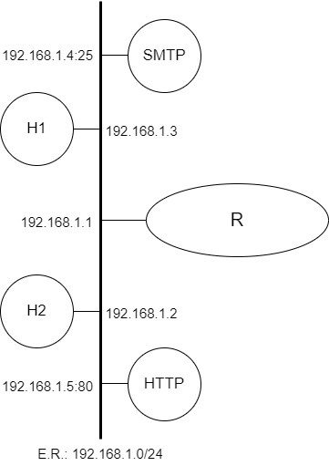

Depuração de Problemas na Camada de Transporte

Prática de Laboratório 03
Depuração de Problemas na Camada de Transporte
Introdução
Para que haja uma conexão por meio de um canal de transmissão confiável, é necessário uma série de mecanismos que protegem a comunicação quanto a efeitos adversos do meio de transmissão: corrupção de dados; congestionamentos e perdas de pacote. Portanto, este experimento apresenta um conjunto mínimo de ferramentas que permitirão a execução de um diagnóstico preciso ao se encarar uma situação de interrupção ou instabilidade de serviço típico de camada de transporte.
Objetivos
- Exercitar uma comunicação típica TCP por meio de ferramentas de diagnóstico (telnet, netcat, sockstat e nmap).
Referências Teóricas
Funcionamento básico de uma rede TCP/IP.
Protocolos de Camada de Transporte.
Material Necessário
- Interfaces de rede (NIC's)
- Máquinas com sistema FreeBSD
- Cabos de rede – par trançado normal
- Switches ou HUBs
- Software nas máquinas: ambiente FreeBSD básico
- Acesso à Internet – NÃO é necessário
- Servidores HTTP, DNS e SMTP devidamente configurados
- Ferramentas de diagnóstico: telnet, nmap, netcat e sockstat
Roteiro
1. Montagem de rede interconectada para o experimento
Os alunos receberão uma topologia com 2 ou mais máquinas e informações sobre intervalo de endereços IP dos equipamentos e máscara de rede.
Além dessa topologia, haverá equipamentos que proverão os serviços necessários às práticas da aula: DNS, HTTP e SMTP.

2. Configurar os clientes na rede de testes e validar as configurações.
Lembrem-se das etapas que foram percorridas na Prática de Laboratório 01.
3. Abertura de um socket servidor.
Usando um dos computadores disponíveis para o experimento e usando privilégios administrativos, habilite um socket TCP em estado de escuta. Como ferramenta de apoio, use a aplicação netcat. Para tanto execute:
$ nc -l numero_da_porta
Para validar a abertura do socket servidor, utilize, no sistema operacional FreeBSD o seguinte comando:
$ sockstat -4l
Esse comando irá exibir todos os processos, IPv4 (-4), em estado de escuta (-l) e que abriram portas. Execute os próximos passos apenas se for possível identificar o processo da aplicação netcat vinculado à porta indicada.
4. Interações com o socket servidor
Na prática sobre camada de aplicação, usamos a aplicação telnet. Essa ferramenta é capaz de abrir sockets TCP cliente a servidores.
Partindo do princípio que há um equipamento em que está aberta uma porta em estado de escuta, ou seja, há um socket servidor de uma aplicação, utilize a ferramenta telnet para se conectar a esse servidor. Apenas relembrando a sintaxe esperada para execuções do telnet:
$ telnet nome_do_host numero_da_porta
Uma vez aberto o socket, envie bytes através da digitação de caracteres do teclado. Para demandar o envido, pressione a tecla ENTER após as digitações.
5. Identificação de serviços disponíveis em um host
Às vezes, faz-se necessário verificar se há serviços em execução em determinado host conectado à rede. Porém, diferentemente do cenário apresentado na Etapa 3, há situações em que não se terá acesso administrativo (ou físico) ao equipamento a ser analisado.
Nesse contexto, será necessário empreender um teste do tipo caixa-preta para verificar se determinados serviços estão ativos. Na verdade, no contexto da camada de transporte, o teste verificará se determinadas portas estão abertas e em estado de escuta no equipamento sobre testes.
As ferramentas até então estudadas são capazes de auxiliar o técnico nessa atividade de identificação de serviços ativos, porém demandarão uma série de interações do operador ou mesmo a programação de scripts que serão executados para varrer determinados conjuntos de parâmetros de interesse.
Como as redes TCP/IP já estão em produção há algumas décadas, é natural que algumas ferramentas mais maduras e integradas estejam disponíveis para a identificação mais imediata dos serviços disponíveis. Uma dessas ferramentas é o nmap.
Para varrer quais são os serviços ativos em determinado host, executa-se o seguinte comando:
$ nmap nome_do_host
É possível demandar uma varredura de um conjunto de equipamentos, por exemplo, todos os equipamentos pertencentes a uma rede. Basta alterar o comando acima da seguinte maneira:
$ nmap faixa_de_ip
onde faixa_de_ip pode ser uma faixa por intervalos (como 192.168.133.1-20, o que contemplaria todos os IPs entre 192.168.133.1 e 192.168.133.20) ou mesmo a indicação de uma subrede usando notação CIDR.
Questões para Estudo
- A porta de um servidor que provê aplicações sobre TCP pode se encontrar em diferentes estados. Quais são esses estados e como evolui a comunicação entre um cliente e um servidor TCP quando a porta se apresenta em cada um dos estados possíveis?
- Que tipo de informações o arquivo /etc/services provê?
- Que tipo de ferramentas você recomendaria para a repetição dos mesmos procedimentos sobre UDP?
- Em relação à Etapa 4 do presente roteiro, descreva o que se observou durante as interações com o socket servidor.
- Como você implementaria um transmissor básico de arquivos usando apenas as ferramentas executadas nesse experimento?
- O nmap é considerado uma ferramenta extremamente poderosa. Como você a utilizaria para identificar quais são os equipamentos que estão ativos e em execução em uma rede?
Referências Bibliográficas
GITE, Vivek. FreeBSD List/Display Open Ports With sockstat Command. Cyberciti, 2008. Disponível em: <https://www.cyberciti.biz/tips/freebsd-lists-open-internet-unix-domain-sockets.html>. Acesso em: 11 dez. de 2022.
ELLINGWOOD, Justin. How To Use Netcat to Establish and Test TCP and UDP Connections. Digital Ocean, 2021. Disponível em: <https://www.digitalocean.com/community/tutorials/how-to-use-netcat-to-establish-and-test-tcp-and-udp-connections>. Acesso em: 11 dez. de 2022.
SHIVANANDHAN, Manish. What is Nmap and How to Use it – A Tutorial for the Greatest Scanning Tool of All Time. FreeCodeCamp, 2021. Disponível em: <https://www.freecodecamp.org/news/what-is-nmap-and-how-to-use-it-a-tutorial-for-the-greatest-scanning-tool-of-all-time/>. Acesso em: 11 dez. de 2022.
telnet(1). Disponível em: <https://www.freebsd.org/cgi/man.cgi?telnet>. Acesso em: 11 dez. 2022.
nmap(1). Disponível em: <https://www.freebsd.org/cgi/man.cgi?query=nmap&manpath=SuSE+Linux%2Fi386+11.3>. Acesso em: 11 dez. 2022.
nc(1). Disponível em: <https://www.freebsd.org/cgi/man.cgi?nc>. Acesso em: 11 dez. 2022.
sockstat(1). Disponível em: <https://www.freebsd.org/cgi/man.cgi?query=sockstat&sektion=1>. Acesso em: 11 dez. 2022.
LUCAS, M. W. Networking for Systems Administrators. 5th. ed. USA: Tilted Windmill Press, 2019.